Innlegg
To fulle lag med kjempeinnsats i Ringeriksmaraton!
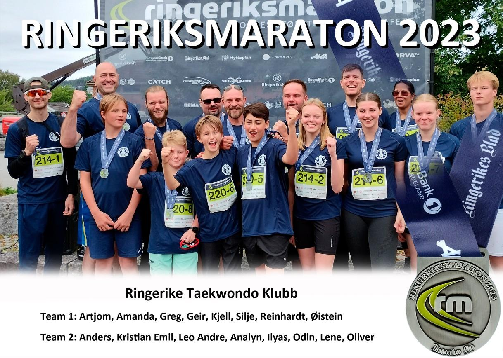
I år igjen var klubben godt representert, med to lag på Ringeriksmaraton! I år klarte vi å stille to fulle lag, uten at noen måtte løpe dobbelt eller med flere stafettpinner, som jo må regnes som en stor suksess. I tabellen ser du lagene.
Lagtiden til lag 1 ble 4:43:12 (mot fjorårets 4:34:29) og lag 2 kom in på 4:19:12 (mot fjorårets 4:39:51). Lagene var riktignok ikke helt like som året før, men vi har samlet sett forbedret oss med rundt 10 minutter :D Den tar vi med oss! Raskeste snitthastighet var det Odin Erling som stod for, på etappe 6 med hastigheten 5:05 min/km(!). Samtlige deltakere fullførte uten noen skader eller hindringer, og med en positiv innstilling! Ekstra hyggelig var det at mange unge var med i år og både var sporty og stilte opp, men også fullførte med imponerende løpstider!
Lag 1
1. etappe 5,3 km Artsiom gikk ut med friskt mot, kule solbriller og løpesekk. Han hadde på forhånd sagt at han regnet med å løpe rundt 6,5 på km. Vi tror han hadde tenkt å dra på litt ekstra i år siden capsen var snudd bakover. Tid: 34.20 minutter Hastighet: 6,29 min/km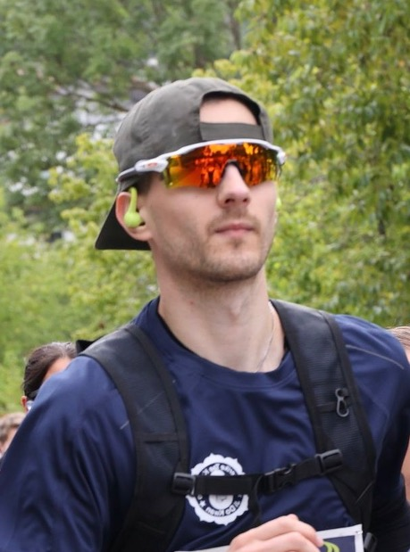
2. etappe 5,5 km Her overtok Amanda stafettpinnen og la i vei mot Røyse skole. Bakken opp til skolen er brattere en den kan virke som for de som ikke har løpt den før, men det kommer et bedre parti etterpå. Hun kjørte på og ser innbitt ut på bilde vi fant. Tid. 40:56 minutter Hastighet: 7,26 min/km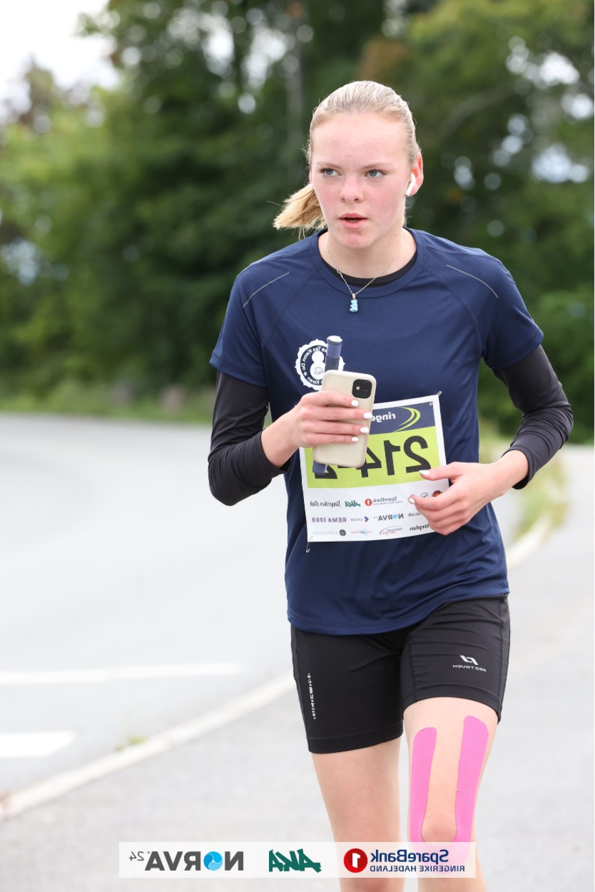
3. etappe 4,3 km Greg stilte opp og ble med på laget helt på tampen og det er vi glad for. Han hadde ikke løpt denne etappen før, men sa at den så flat ut, Han overtok stafettpinnen og la i vei. Tid. 29:24 minutter Hastighet: 6,50 min/km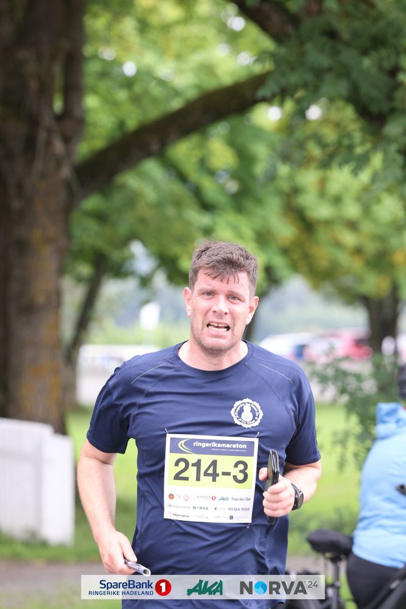
4. etappe 6 km Geir overtok pinnen og tok siste rest av bakken. Kjente at beina var stive allerede på vei ned første bakke. Fant deretter motivasjon i å prøve å ta igjen den eneste løperen han så foran seg. Hadde som håp å løpe på under 7,0 min/km, men måtte skuffa se at det ble rett over. Tid. 41:33 minutter Hastighet: 7,02 min/km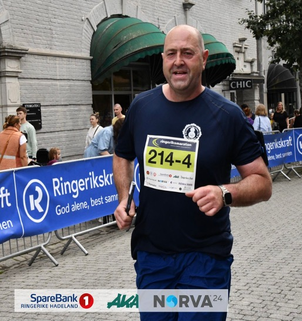
5. etappe 4,9 km Kjell overtok pinnen midt i byen og la i vei igjennom byen over brua med frisk bris fra fossen og oppover Hønengata. Det er en grei stigning også fra byen og opp til vårt gamle treningslokale i Ringersikhalen. Men Kjell ser ut til å ha kost seg mye på turen og gjorde en kjempeinnsats. Tid. 35:14 minutter Hastighet: 7,02 min/km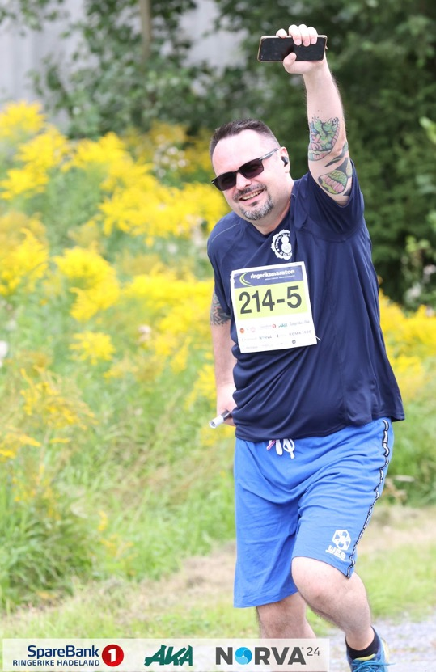
6. etappe 4,6 km Silje løp opp bakken etter tømmervekta og igjennom skogen opp mot Vågård. Hvordan hun kom seg igjennom skogen uten å bli fanget opp av et kamera aner ikke vi. Men løp med stil gjorde hun. Tid. 32:41 minutter Hastighet: 7,06 min/km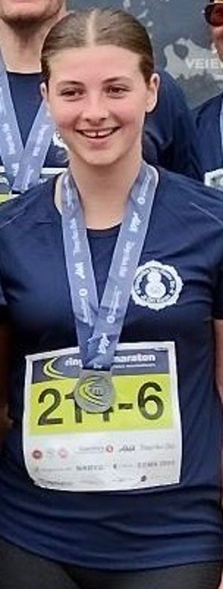
7. etappe 6,4 km Reinhardt overtok stafettpinnen fra sin datter og gikk ifølge seg selv hardt ut på sin etappe da han synes det var kjipt at det var så få igjen på veksling når det endelig ble hans tur. Vi tror han var lei av å vente og var redd mygg. Tid. 36:22 minutter Hastighet: 5,40 min/km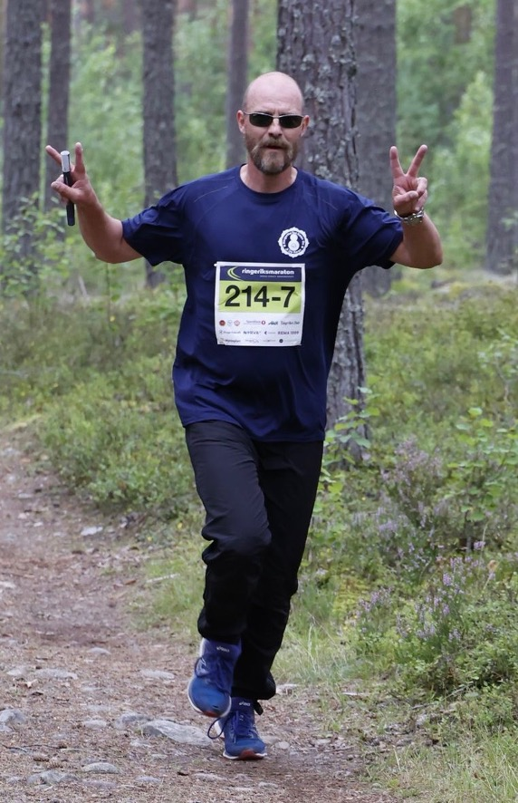
8. etappe 5,2 km Øistein overtok pinnen og la i vei på siste etappe inn mot mål. Han hadde ikke tid til solbriller og slike ting og kjørte på med mål om å komme fort i mål. Tid. 32:42 minutter Hastighet: 6,17 min/km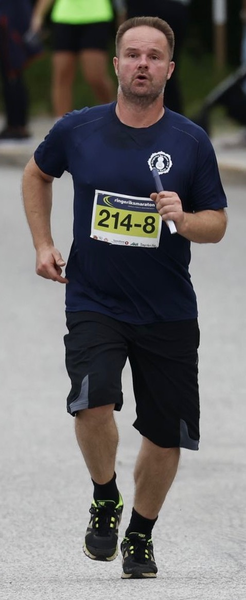
Lag 2
1. etappe 5,3 km Anders la ut i et forrykende tempo. Vi vet ikke hva han hører på her, men mistenker at det er noe hevy metal som sparka han fort oppover bakken fra start. Anders sa før start at han løpere ca. på 5,5 min/km men leverer knallsterke 5.05 min/km. Så det lange håret må ha stått rett ut på vei bortover Selteveien. Tid: 27,0 Hastighet: 5,05 min/km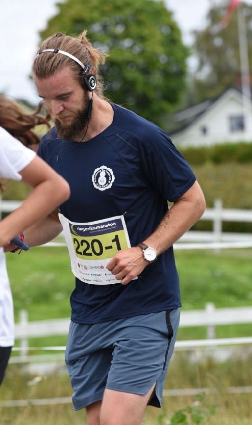
2. etappe 5,5 km Kristian Emil stiller til start for første gang for klubben og leverer et kjempeløp. Her har det vært full fart opp bakken og sprinta ned bakken etter Røyse skole. Tid: 29,40 Hastighet: 5,23 min/km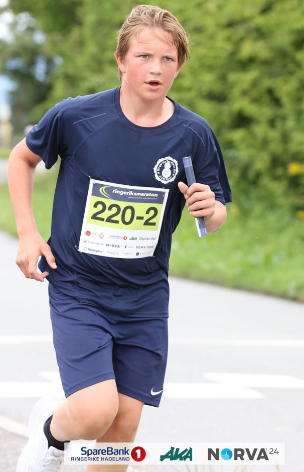
3. etappe 4,3 km Leo Andre overtar stafettpinnen fra broren og setter fart og virker til å ikke ha lagt merke til at det går oppover mot Norderhov Kirke. Han sa noe om at han hadde sett gymlæreren og ga gass. Mor som var i støtteapparatet for gutta hadde jo knapt rukket frem til veksling for å ta han imot. Det ryktes også at han la ut ting på Snap på turen. Tid. 29:24 minutter Hastighet: 6,50 min/km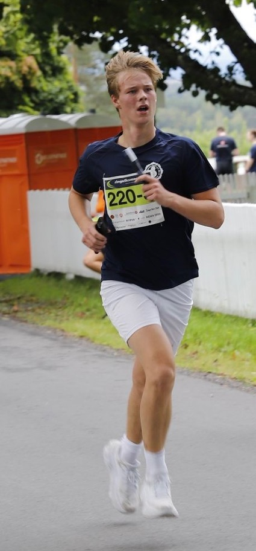
4. etappe 6 km Analyn la ut fra Norderhov Kirke og oppover bakken som hun synes er tung og så bortover mot Hverven kastet. Hun må ha snakket seg selv litt ned i år for hun leverer bedre en de tidligere årene hun har vært med. Mest fornøyd virker hun med å være å ha løpt raskere en Geir og viser stor glede ved veksling. Tid: 37,26 Hastighet: 6,20 min/km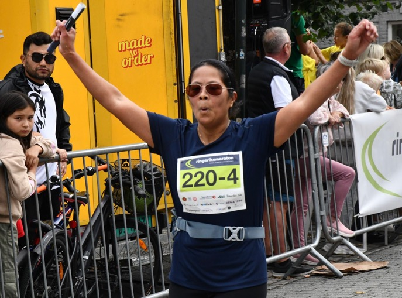
5. etappe 4,9 km Ilyas stilte opp for første gang på Ringeriksmaraton. De var nok ikke helt sikre på hva de meldte seg på og mor var veldig bekymret. Men Ilyas leverte et godt løp og sendte Odin ut på 6. etappe. Her er han fanget med bestemt blikk og i godt driv. Tid: 33,22 Hastighet: 6,40 min/km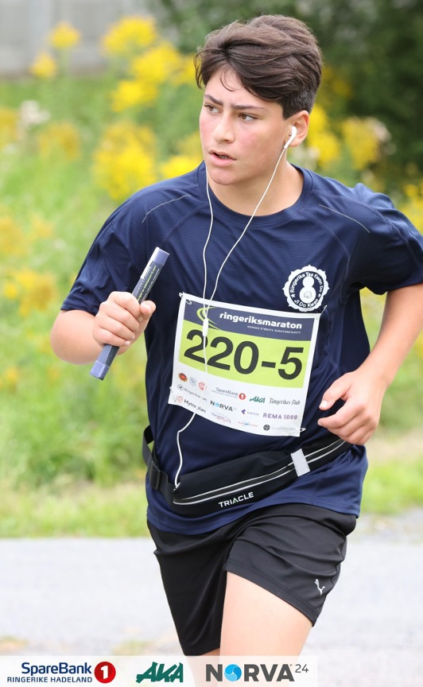
6. etappe 4,6 km Odin spant i gang på 6. etappe og leverte dagens hastighet på våre løpere. Lite viste vi at han var så kjapp. Noen av oss synes det er ekstra gøy at han slo Anders akkurat på tiden. Tid: 23,21 Hastighet: 5,04 min/km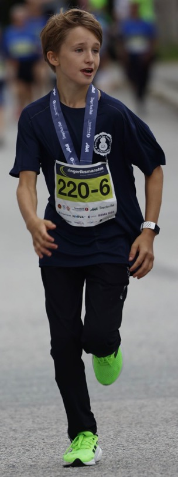
7. etappe 6,4 km Lene Kristine overtok stafettpinnen fra Odin noe overasket over at han kom frem så fort. Hun stakk i vei videre og løp igjennom skogen. Max uheldig så har hun snublet og falt i skogen, men hun skadet seg heldigvis ikke og fikk sendt neste man ut på siste etappe. Tid: 52,51 Hastighet: 8,15 min/km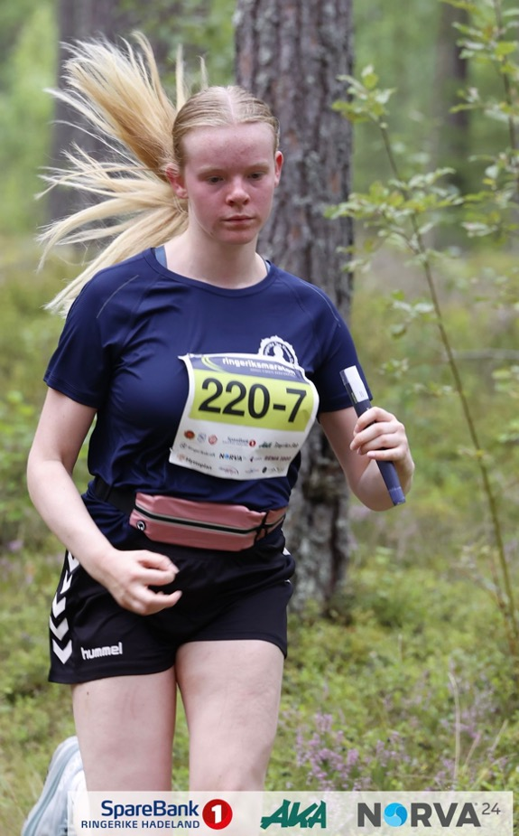
8. etappe 5,2 km Oliver løpte også for første gang. Han stiller med raske briller og musikk på øra og gjennomfører med stil. Vi håper at broren ble så imponert over innsatsen at han blir med neste gang og vi kan få en brødre duell. Tid: 33,28 Hastighet: 6,26 min/km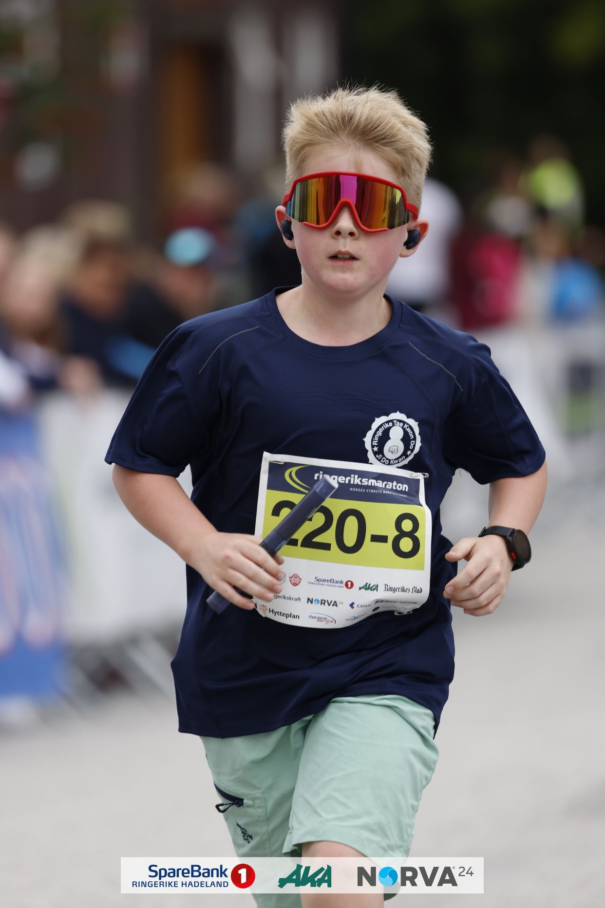
Det finnes en mengde bilder på Ringeriksmaraton sine nettsider: Her finnes bilder av lag 1 og her finnes bilder av lag 2. Etter løping ble det lagbilde og premieutdeling etter målgang og så var det hyggelig grilling hjemme i hagen til Anders som stilte opp og var vert for årets grilling. Det ble fest under partytelt i hagen med forfriskninger i flytende og fast form, og en hyggelig atmosfære preget både løpere og støtteapparat. Vi håper alle hadde en topp dag og at vi klarer å stille enda flere til start neste år. Her kan alle bli med!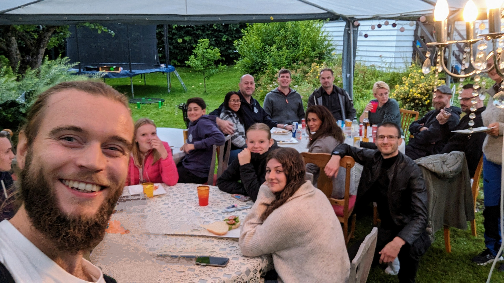
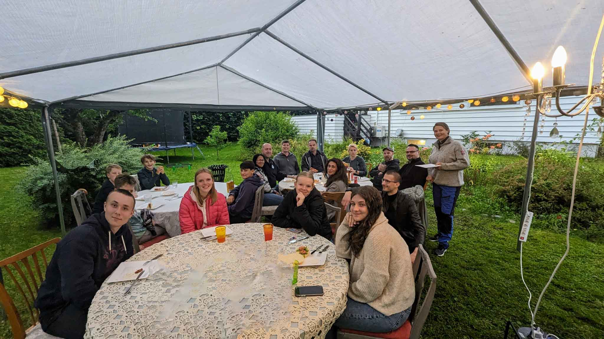